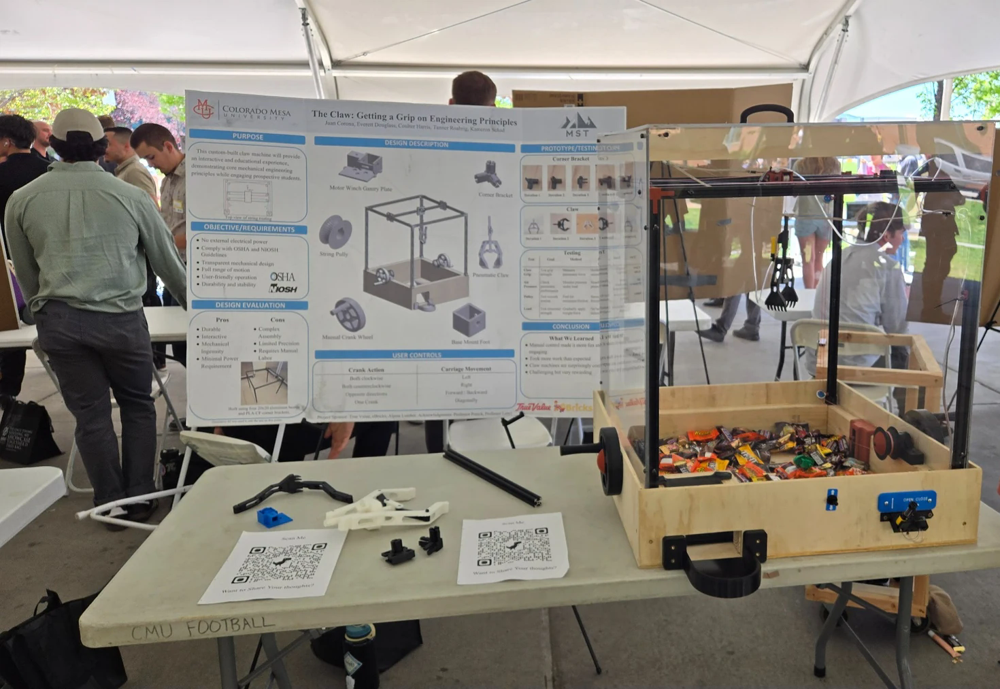

ENGINEERING PORTFOLIO
Projects
Six projects spanning mechanical design, simulation, fabrication, and testing. Ordered by technical relevance.
 01
01Rocket Nose Cone Aerodynamics
Designed eight nose cones, ran CFD, and compared numerical predictions with wind-tunnel measurements.

02Two-Player Claw Machine
Designed the manual gantry and refined the pneumatic claw through five-plus design iterations within a $250 team budget.
 03
03Helmet Light Mount
Designed a removable bike-light adapter and resolved a recurring snap-fit failure through physical iteration.
INTEGRATIONNo client-owned media shown
Confidential Client Design
Developed most of the mechanical CAD for a client prototype, with measured interfaces and assembly constraints.
 05
05Scene Shop Fabrication
Designed and built an 18-foot workstation and coordinated fabrication of four mobile worktables.
 06
06Computational Methods
Applied MATLAB to numerical dynamics, tensile-test data, signal processing, and iterative solvers.
No projects in this category.
TECHNICAL DETAIL